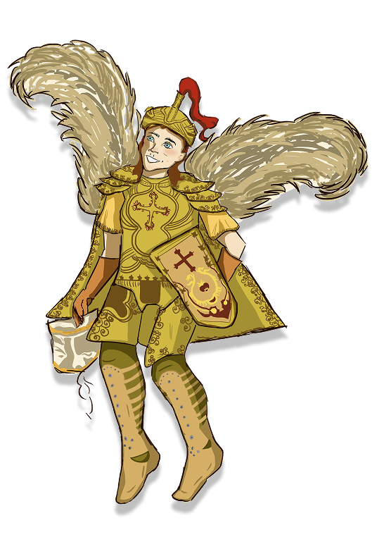
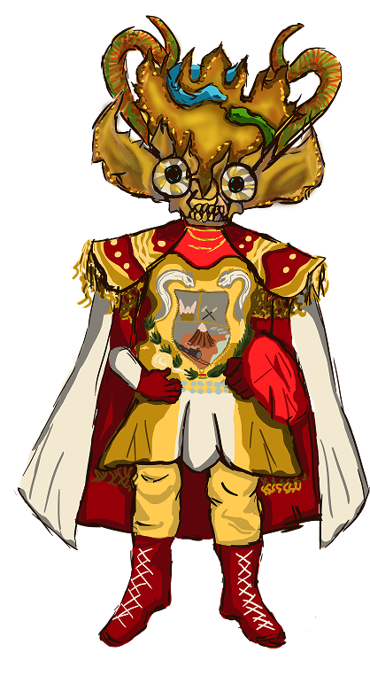
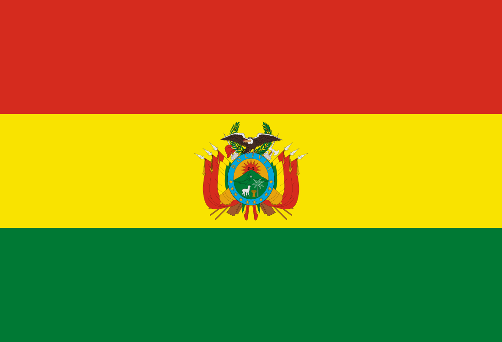

BOLÍVIA
Diablada de Oruro
Arcanjo Miguel

O personagem Miguel, representado como o Arcanjo São Miguel, é uma das figuras mais importantes da Diablada de Oruro, tradicional dança do Carnaval de Oruro, na Bolívia. Ele simboliza a vitória do bem sobre o mal e atua como líder das forças celestiais no confronto contra Lúcifer, Satanás e os demais demônios da encenação. Sua presença reflete a forte influência do catolicismo incorporada às antigas crenças andinas durante o processo de colonização espanhola.
Miguel surgiu na Diablada a partir do encontro entre as crenças andinas e o catolicismo trazido pelos espanhóis. Na tradição, ele representa o Arcanjo São Miguel, líder das forças celestiais, que derrota Lúcifer e simboliza a vitória da fé e da justiça sobre o mal. Sua presença também está ligada à devoção à Virgem do Socavón, unindo elementos católicos e andinos em uma importante manifestação cultural boliviana.
O personagem Lúcifer é uma das figuras centrais da Diablada de Oruro, dança tradicional do Carnaval de Oruro, na Bolívia. Ele representa o líder das forças infernais e simboliza a luta entre o bem e o mal, tema principal da encenação religiosa e cultural da Diablada. Sua figura combina elementos da tradição católica trazida pelos colonizadores espanhóis com crenças andinas ancestrais ligadas ao mundo espiritual e às divindades das minas.
Lúcifer surgiu na Diablada a partir do sincretismo entre as crenças andinas e o catolicismo trazido pelos espanhóis. Antigas divindades ligadas às minas e montanhas foram associadas à figura do demônio cristão, transformando Lúcifer no líder das forças infernais da encenação. Durante a dança, ele enfrenta o Arcanjo São Miguel, representando a luta entre o bem e o mal. O personagem também mantém ligação com o "Tío de la Mina", entidade tradicional venerada pelos mineiros bolivianos como guardião das riquezas do subsolo.
Lúcifer


A Diablada de Oruro é uma festa vinda da região Altiplano, de origens andinas, pré coloniais, que foram modificadas com a inserção da religião católica pelos espanhóis na época da colonização. A dança dos diabos é dedicada à Virgem de Socavón, que serve como uma demonstração da luta entre o bem e o mal. A lenda da diablada conta a história de um grupo de mineradores que quando foram atacados pelos demônios, rezaram para a Virgem de Socavón, que em resposta, enviou o Arcanjo São Miguel para resgatá-los. Durante a festa, uma pessoa se veste do arcanjo para representar o bem vencendo o mal. A tradição virou Patrimônio Cultural e Imaterial da Bolívia e destaca a criatividade dos bolivianos na confecção das máscaras e dos trajes, além da preservação de danças originárias.

A Bolívia é um dos países com maior diversidade cultural da América do Sul. Reconhecida como Estado Plurinacional, abriga dezenas de povos indígenas e mais de trinta idiomas, entre eles o quéchua, o aimará e o guarani, além do espanhol. Sua história é marcada pela presença dos povos andinos, pela colonização espanhola e por períodos de instabilidade política e ditaduras durante o século XX.
O Estado Plurinacional da Bolívia, assim formalmente chamado, habitado antes dos espanhóis por povos indígenas da região dos andes e do Império Tiwanaku, cordilheira que marca o seu território este, que passou pela dominação europeia durante 3 séculos, recuperando sua independência em 1825.
Devido ao período recente de dominação econômica estadunidense nas américas, a Bolívia fica de 1964 à 1982 sob influência ditatorial.